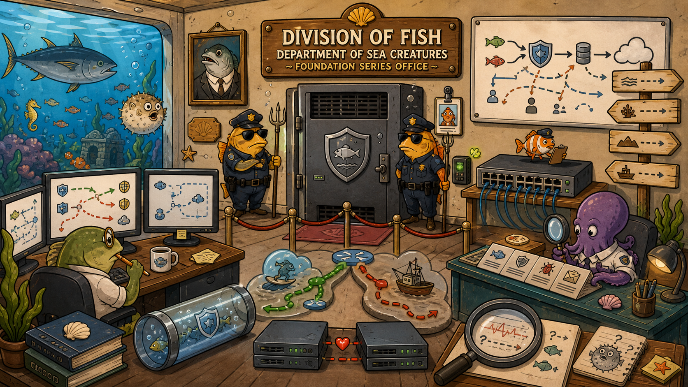
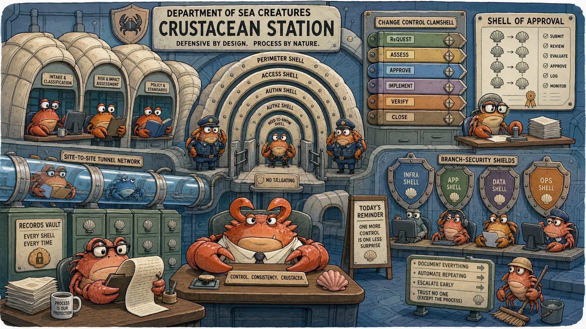
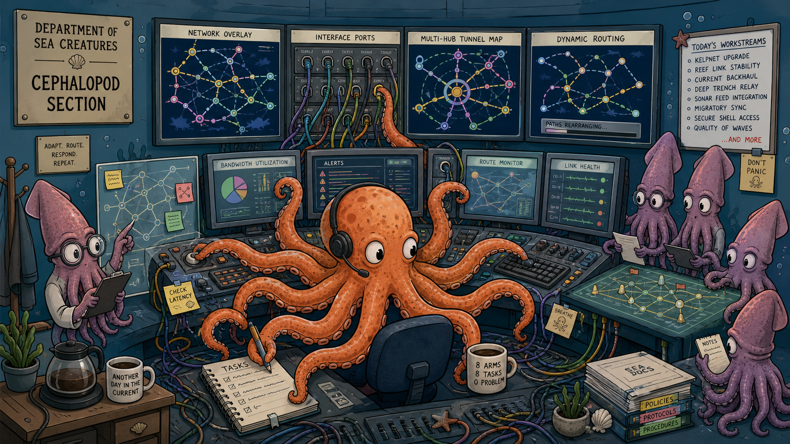
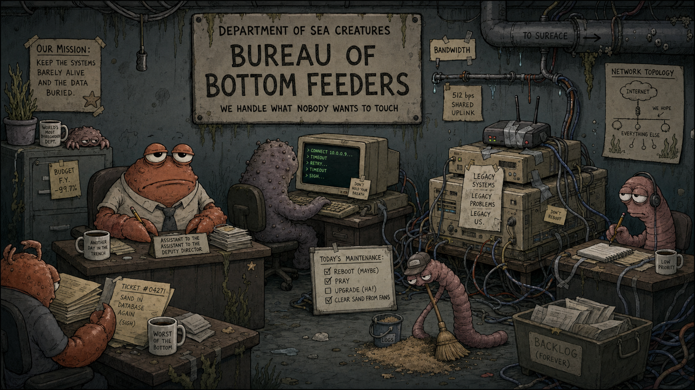
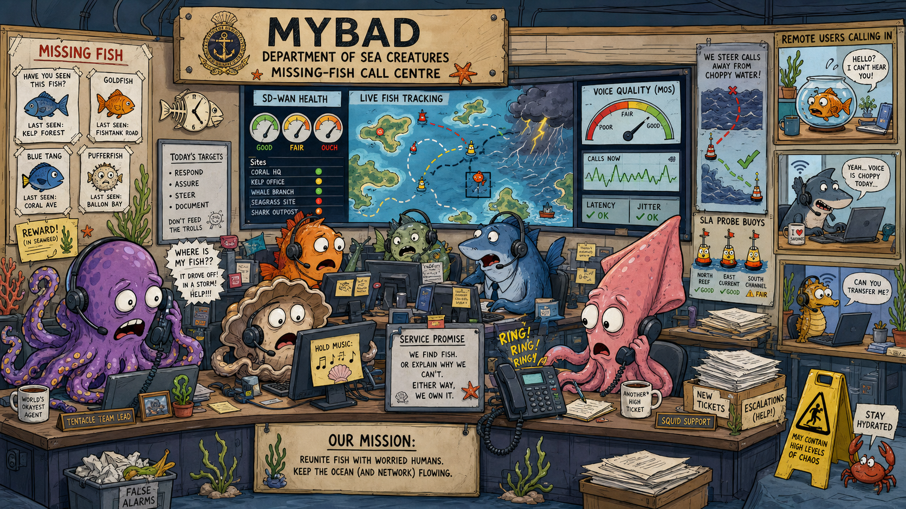
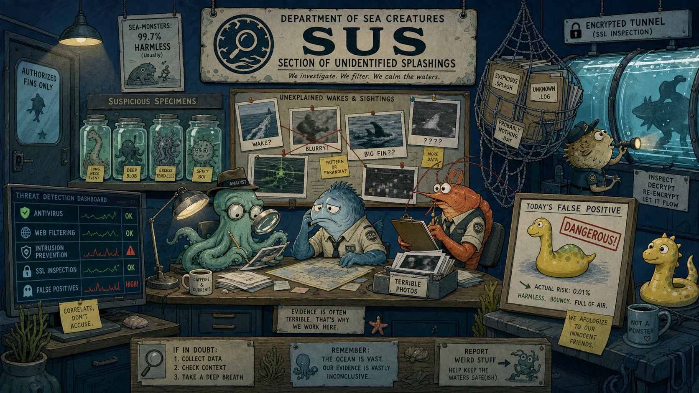
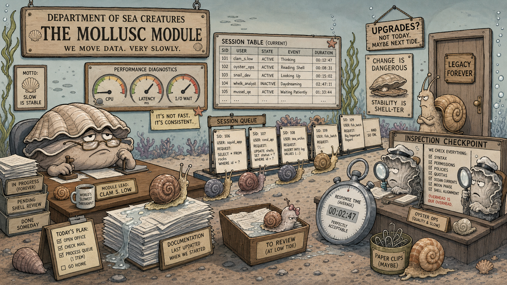
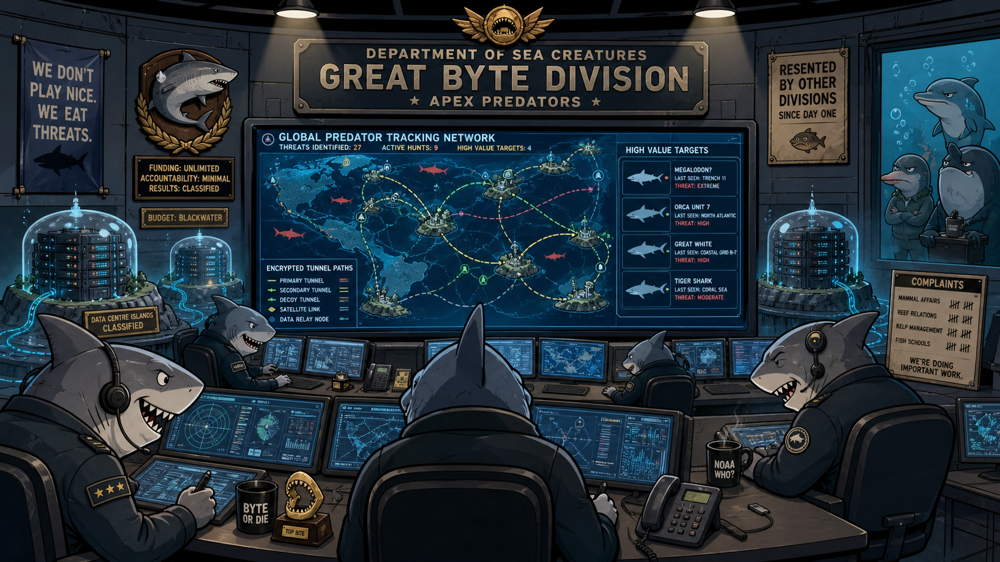

Fysh · the unseen executive
No employee has met Fysh in person. Fysh appears only in Microsoft Teams meetings, never enables the camera, and uses a generic fish silhouette as the profile image.
Nobody agrees on whether Fysh is a surname, a title, a shared executive account, an artificial intelligence, or an actual fish with excellent delegation skills.
Fysh's executive requests are always broad and always urgent. Teams status is always “Available”, even at 03:00. Contradictory clues may appear in any session — the truth is never confirmed.
Where the story lives during NSE 4
Only the Division of Fish is fully canonical during NSE 4. The other seven are foreshadowed and named on-screen but not staffed — they belong to the FortiManager, Secure Networking Architect and FortiSASE storylines that follow.

images/prompts.txt.The story begins here. One FortiGate, one switch, one staff VLAN, one server VLAN. Everything future depends on Samwise getting the doorway right.
- FortiGate setup
- Policies & NAT
- Routing
- Authentication
- Security profiles
- IPsec
- Basic SD-WAN
- HA & troubleshooting

images/prompts.txt.First remote branch. Foreshadowed during NSE 4 IPsec episodes; becomes canonical in FISH-S5E01 when the Kingston Foreshore annex opens and requests a protected path back to ZOO HQ.
- Segmentation
- Site-to-site VPN
- Branch security
- Change control

images/prompts.txt.Naturally lives on multiple interfaces and multi-hub overlays. Mentioned in passing during NSE 4 but not deeply explored until the Secure Networking storylines.
- Multiple interfaces
- Multi-hub overlays
- Dynamic routing

images/prompts.txt.Slogan: “We have reached the bottom, but the ticket remains open.” Their ticket queue is called the abyss. Referenced as the counter-example when Junior forgets that not every site has enterprise bandwidth.
- Legacy systems
- Minimal bandwidth
- Cost-constrained design

images/prompts.txt.High-pressure call centre. Voice packets must stay clear. Not staffed during NSE 4 but Fysh keeps hinting the Division will take on Nemo-adjacent workloads soon.
- SD-WAN health & SLA
- Voice-quality steering
- Remote users

images/prompts.txt.Files named FINAL_REAL_MONSTER_7.jpg. The natural home for AV / web filter / IPS / SSL inspection when the story gets there. Foreshadowed in FISH-S4E06 (The Blurry JPEG Flood).
- Antivirus
- Web filtering
- IPS
- SSL inspection
- False positives

images/prompts.txt.Refuses upgrades because clams do not need low latency. Referenced in performance-diagnostic conversations to distinguish real firewall load from application slowness.
- Performance diagnostics
- Session tables
- Inspection overhead

images/prompts.txt.Runs the two data centres (GBD-TUG / GBD-GUN) and the high-end FortiGate estate. Señor's home turf for “was that a TCP FIN or an actual fin?” Not entered during NSE 4 — the enterprise storyline lives in the Secure Networking Architect path.
- High-end platforms
- Multiple data centres
- Enterprise routing
- Advanced IPsec
ZOO HQ and its satellite sites
Private addressing uses 10.40.0.0/16, split into /20 blocks per site. Only ZOO HQ — and briefly Crustacean Station — are entered during NSE 4.
How it looked on day one
FISH-S1E01 opens with exactly this. Every later episode adds to the register — but nothing changes silently. Permanent changes always produce a topology delta the tutor records.
Internet
|
┌───────────────────┐
│ FGT-ZOO-EDGE-01 │ # first & only FortiGate
└──────────┴─────────┘
|
┌──────────┴─────────┐
│ SW-ZOO-01 │ # the access switch
└──────┴──────┴───────┘
| |
VLAN 10 VLAN 20
STAFF SERVERS
10.40.10.0/24 10.40.20.0/24
| |
ADMIN-ZOO-01 APP-ZOO-01
10.40.10.10 10.40.20.20
# Gateways: staff .1 | server .1 | single ISP | no HA yet